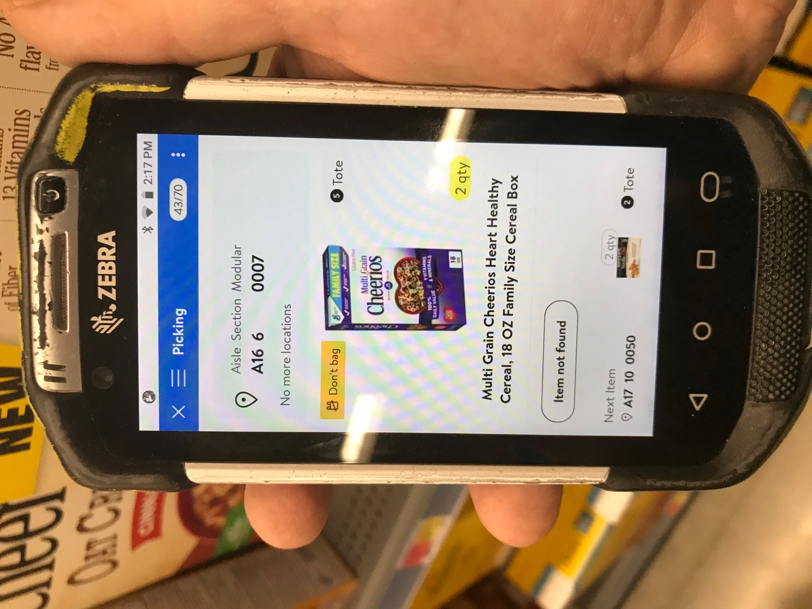

It's important to note that I studied Fine Arts (1988-1990) at the County College of Morris (CCM) and Graphic Design (1990-1992) at Montclair State University, both in Northern NJ, to earn a AA Degree and BA Degree, respectively.

WHERE DID I GO?

Without Graphic Design there for me, and to keep a roof over my head and food on my table, I took a local job in Parsippany, NJ as an Personal Online Shopper at ShopRite #355. I figured it's still retail, but instead of being in a corporate office advertising products in print form, I would actually be in store collecting those same items in the Supermarket. It was honest work and I was there for two successful years. (2020-2022)
Next, I had the opportunity to help my family (mom in nearby nursing home) so I moved to Washington, NJ in Warren County as I continued this line of work. (Personal Online Shopper) This time it is with Walmart #2503 in Hackettstown, NJ. (2020-Present) I was able to find additional success as shown below with an award I am very proud of.
With all this being said, my love is still with Graphic Design. In my free time, I spent that time learning Web Design part time, starting in 2020, off the internet with helpful courses from the Udemy and YouTube platforms. Someday, I will return to this wonderful profession.
 In March of 2024, I won the 2nd Shift Associate of the Month Award.
In March of 2024, I won the 2nd Shift Associate of the Month Award.
From Managers Vote
Walmart in Hackettstown, NJ
Store Number 2503
I worked 11am-8pm shift

HOW CORPORATE WORK RELATES TO INSTORE WORK, AND VICE VERSA = BOTH ADVERTISING SUCCESSES
Working in a competitive corporate setting prepared me for a successful time as an Personal Online Shopper, no doubt about it. I would place items in the circular from its data bases and make that page attractive.
Now I am at store level, and I remember those items from the circular as I find them for real on the shelves of the asiles in an actual retail store.
Now with the successful experiences of retail shopping for the customers at store level, it can translate back easily to a corporate enviroment. I will be able to create print and digital advertisements effectively because I saw and dealt with them first hand when I was with ShopRite and Walmart for the past years in busy situations.

Above, a days activity at Walmart #2503 on March 24, 2024.
I am having great success today at Walmart as I did when I was working at ShopRite as my past corporate training has "flexed my muscles each day for victory" today at store level.

Above, you see cereal requested on my Hand Held Device. I am gettting that cereal in Aisle A-16 at Walmart #2503 (below) in the store.
That cereal also can be found in a store circular, which I helped design in an office during past employment, to inform the customer of it's availability that week. One hand washes the other very nicely.

ALL ABOARD!!
My "resume journey" awaits...First Stop